Bölüm 7 Değişkenlik ve Kontrol Diyagramlarına Giriş
7.1 Değişkenlik Kavramı ve Kaynakları
Her prosesin doğasında var olan değişkenlik, ürünlerden birinin diğerinden farklı olmasına sebep olmaktadır. Esasen değişkenlik kavramı doğanın bir kanunudur ve herhangi bir kategorideki iki doğal maddenin birbirinin tam olarak aynısı olmamasını ifade etmektedir.
Değişkenlik kilo gibi oldukça büyük ve fark edilebilir olabileceği gibi kar tanelerinin şekilleri gibi çok küçük olabilir. Değişkenlik çok küçük olduğunda öğeler özdeş görünebilir ancak hassas ölçüm aletleri ile farklılık tespit edilebilir. Eğer iki öğe aynı ölçüme sahip olarak görünüyorsa , bu durum ölçüm aletlerinin sınırlarından kaynaklanmaktadır.
Herhangi bir üretim sürecinde, ne kadar iyi tasarlanmış veya özenle korunmuş olursa olsun, belirli bir miktarda doğal değişkenlik her zaman var olacaktır. Bu doğal değişkenlik veya “arka plan gürültüsü”, birçok küçük ve kaçınılmaz nedenin kümülatif etkisidir. Bu değişkenlikler, süreci revize etmekten başka, hakkında çok az şey yapılabilen şans veya rastgele değişkenlikler kategorisine aittir. Bu tür bir değişkenlik, birçoğu önemsiz olan “rastgele” veya “genel” nedenlerin karmaşık bir etkileşiminin çok sayıda etkisinin toplamıdır.
Rastgele değişkenlik tek başına mevcut olduğunda, nedenlerinin izini sürmek mümkün olmayacaktır. Örneğin, ürünlerin kalitesinde değişkenliğe neden olan yaygın nedenler kümesi, proses girdilerinde rastgele farklılıklar içerebilir: atmosferik basınç veya sıcaklık değişiklikleri, trafik veya ekipman titreşimleri, elektrik veya nem dalgalanmaları ve operatörün fiziksel ve duygusal koşulları. Bu, bir madeni paranın atıldığında tura veya tura gelmesine neden olan kuvvetler kümesine benzer. Diğer bir deyişle, tesadüfi nedenler sürecin içsel bir parçasıdır. Bir süreçte değişkenliklerin yalnızca genel nedenleri mevcut olduğunda, sürecin “istikrarlı”, “istatistiksel kontrolde” veya “kontrolde (in control)” olduğu kabul edilir.
Büyüklüğü görece büyük olan ve kolayca tanımlanan değişkenlik nedenleri, “atanabilir (assignable)” veya “özel” nedenler olarak sınıflandırılır.Temel kalite özelliklerindeki bu değişkenlik genellikle üç kaynaktan ortaya çıkar:
- yanlış ayarlanmış veya kontrol edilen makineler,
- operatör hataları
- kusurlu hammadde
Bu tür bir değişkenlik, arka plan gürültüsüyle karşılaştırıldığında genellikle büyüktür ve genellikle kabul edilemez bir işlem performansı düzeyini temsil eder. Özel değişkenlik nedenleri mevcut olduğunda, değişkenlik aşırı olacaktır ve süreç “istikrarsız”, “istatistiksel kontrol dışı” veya beklenen rastgele değişkenliğin ötesinde olarak sınıflandırılır. Kısaca “kontrol dışı (out of control)” olarak yazılır.
Özel nedenler arasında, doğal olarak kararlı olduğunda prosesin kurcalanması veya gereksiz şekilde ayarlanması gibi yapısal değişiklikler yer alır.
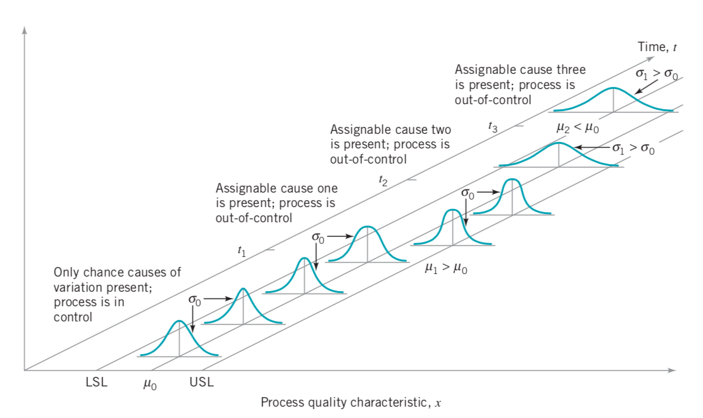
Genel neden değişkenliği; sürecin doğası
Özel neden değişkenliği; gerçek değişiklikler
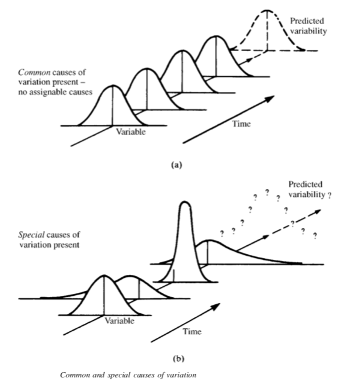
Değişkenlik; ekipman, malzeme, ortam, ve operatör kaynaklı olarak her proseste mevcuttur. Bir üretim prosesinde mevcut olabilecek değişkenlik kaynakları aşağıdaki görselde sunulmuştur.
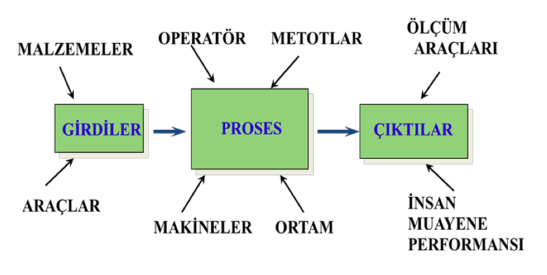
Değişkenlik genel ve özel nedenlerden kaynaklanabilir. İstatistiksel kalite kontrolde , yalnız genel nedenlerden kaynaklı bir değişkenlik söz konusu ise prosesin istatistiksel olarak kontrol altında olduğu söylenebilir. Bu durumda proses stabildir ve tahmin edilebilir niteliktedir.
Bir ürün müşteri beklentilerini karşılayacak veya aşacaksa, genellikle istikrarlı veya tekrarlanabilir bir işlemle üretilmelidir. Proses, ürünün kalite özelliklerinin hedef veya nominal boyutları etrafında çok az değişkenlikle üretilebilmelidir. SPC, değişkenliğin azaltılması yoluyla süreç kararlılığının sağlanmasında ve kapasitenin iyileştirilmesinde yararlı olan güçlü bir problem çözme araçları bütünüdür.
7.1.1 Doğruluk ve Hassasiyet
Ölçülebilen özellikler yoluyla proses değişkenliğinin ölçümünde bir prosesin doğruluğu (accuracy) ve hassasiyeti (precision) arasındaki fark genellikle yanlış anlaşılmaktadır. Aradaki fark aşağıda açıklanmaktadır;
- Bir prosesin doğruluğu hedeflenen değeri bulma yeteneğine aittir.
- Bir prosesin hassasiyeti, değerlerin yayılma derecesine aittir.
- Hassasiyet ve doğruluk arasındaki bu ayrım, sonuçlara veya değerlere tek tek değil, sadece grup olarak bakıldığında anlaşılabilir.
- Prosesin doğruluğu ve hassasiyeti hakkında bilgi eksikliğinden dolayı tek bir sonucu temel alarak proses ayarı konusunda karar vermek istenmeyen sonuçları ortaya çıkarabilir.
- Proses hassasiyetinin yokluğunu düzeltmek üzere ayar yapmak, yayılmayı düzeltmek için gereken araştırmayı yapmaktan genellikle daha kolaydır.
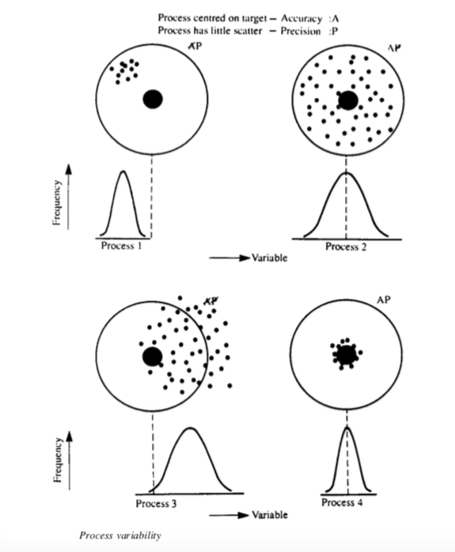
Şekilde görülen dağılımlara göre;
Proses 1 - hassastır (değişkenlik azdır) fakat merkezlenme hedef değer olmadığından doğru değildir.
Proses 2 - doğrudur fakat hassas değildir, dağılımda değişkenlik çok fazladır.
Proses 3 - hem doğru değildir hem de hassas değildir.
Proses 4 - hem doğru hem de hassas bir dağılım sergilemektedir.
7.2 Kontrol Diyagramlarına Giriş

SPC, yirminci yüzyılın en büyük teknolojik gelişmelerinden biridir, çünkü sağlam temel ilkelere dayanır, kullanımı kolaydır, önemli bir etkiye sahiptir ve herhangi bir sürece uygulanabilir. Bu bakımdan SPC’nin yedi temel aracı (the magnificent seven)
- Histogram veya dal-yaprak grafiği
- Kontrol listeleri
- Pareto diyagramı
- Sebep-sonuç diyagramı
- Kusur konsantrasyon diyagramı
- Serpilme diyagramı
- Kontrol grafiği
olarak tanımlanmıştır. Yedi araçtan Shewhart kontrol grafiği muhtemelen teknik olarak en karmaşık olanıdır. 1920’lerde Bell Telefon Laboratuvarlarında Walter A. Shewhart tarafından geliştirilmiştir.
Bir proseste mevcut olan değişkenliğin genel veya özel nedenlerden kaynaklı olma durumu kontrol diyagramları yardımı ile analiz edilmektedir.
Kontrol diyagramları; arzu edilen niteliklerde ürün veya hizmet üretebilmek için prosesin istatistiksel olarak kontrol ve analiz edilmesinde kullanılmaktadır.
DMAIC sürecinin analiz ve kontrol aşamalarında kullanılan bir araçtır.
Bu diyagramlar proseste bir sorunun var olup olmadığını ortaya koymakta, sorun hakkında ipuçları vermekte ancak sorunun nedenini göstermemektedir.
Kalite özelliğine, ölçülecek veri tipine ve kullanım amacına göre istatistiksel kalite kontrolde çok sayıda farklı kontrol diyagramı kullanılmaktadır.
İstatistiksel proses kontrolünün temel bir amacı, birçok uygun olmayan birim üretilmeden önce sürecin araştırılması ve düzeltici eylemin gerçekleştirilebilmesi için süreç kaymalarının özel nedenlerinin oluşumunu hızlı bir şekilde tespit etmektir.
Son olarak, istatistiksel süreç kontrolünün nihai amacının süreçteki değişkenliği ortadan kaldırmak olduğu unutulmamalıdır. Değişkenliği tamamen ortadan kaldırmak mümkün olmayabilir, ancak kontrol diyagramı, değişkenliği olabildiğince azaltmada etkili bir araçtır.
Kalite kontrol diyagramının seçimi ilk olarak toplanan veri tipinin sürekli ya da kesikli olmasına göre farklılık göstermektedir. Diyagram seçimindeki ilerleyen adımları aşağıdaki tablodan inceleyebilirsiniz.
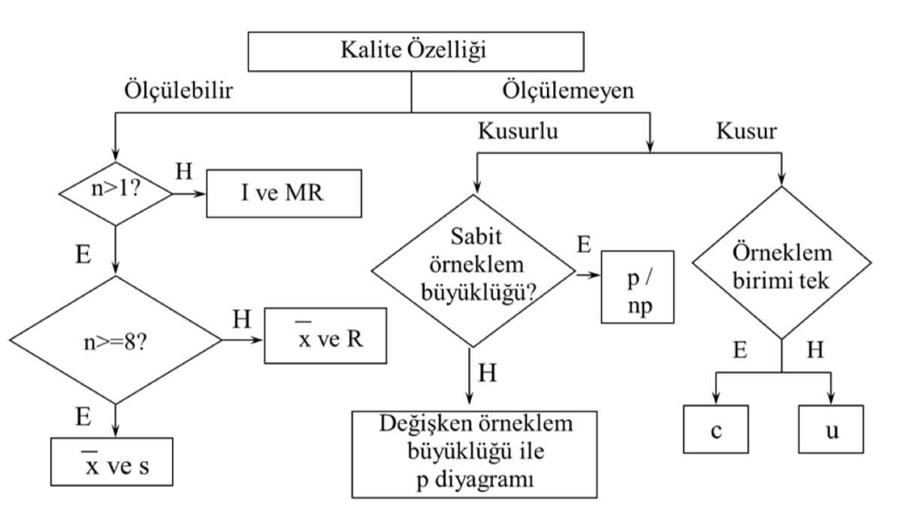
Tabloda yer alan kontrol diyagramları dışında sürekli veri tipinde daha hassas analizler için kullanılan EWMA (Üstel Ağırlıklandırılmış Hareketli Ortalamalar) ve CUSUM (Kümülatif Toplam) gibi farklı kontrol diyagramları da söz konusudur.
Kalite kontrol diyagramları, diyagram türünden bağımsız olarak
- üst kontrol limit (Upper Control Limit; UCL),
- merkez çizgisi (Center Line; CL) ve
- alt kontrol limitinden (Lower Control Limit; LCL)
oluşmaktadır. Kontrol limitleri merkez çizgisinin \(\pm3 \sigma\) uzaklığında olmaktadır. Merkez çizgisi ise kalite diyagramına bağlı olarak incelenecek kalite özelliğinin ortalamasına eşittir.

\(UCL=CL+3\sigma\)
\(LCL=CL-3\sigma\)
Bu kontrol limitleri, eğer proses kontrol altında ise, numune noktalarının neredeyse tamamı bunların arasına düşecek şekilde seçilir. Noktalar kontrol sınırları içinde kaldığı sürece, işlemin kontrol altında olduğu varsayılır ve herhangi bir işlem yapılması gerekmez.
Bununla birlikte, kontrol sınırlarının dışında kalan bir nokta, sürecin kontrol dışı olduğunun kanıtı olarak yorumlanır ve değişkenliğin özel nedeni olduğunu ifade eder.Bu problem ile ilgili sorumlu atanabilir, nedeni veya nedenleri bulmak ve ortadan kaldırmak için araştırma ve düzeltici eylem gereklidir.

Tüm noktalar kontrol limitleri içinde çizilse bile, sistematik veya rastgele olmayan bir şekilde davranıyorlarsa, bu sürecin kontrol dışı olduğunun bir göstergesi olabilir. Örneğin, son 20 noktanın 18’i merkez çizgisinin üzerinde ancak üst kontrol sınırının altında çizilirse ve bu noktalardan yalnızca ikisi merkez çizgisinin altında ancak alt kontrol sınırının üzerinde çizilirse, bir şeylerin ters gittiği düşünülebilir.
Süreç kontrol altındaysa, çizilen tüm noktalar esasen rastgele bir modele sahip olmalıdır. Genellikle, belirli bir rastgele olmayan modelin bir kontrol çizelgesinde görünmesinin bir nedeni vardır ve bulunup ortadan kaldırılabilirse, süreç performansı iyileştirilebilir.
Kontrol çizelgeleri ile hipotez testi arasında yakın bir bağlantı vardır. Bir anlamda, kontrol çizelgesi, sürecin istatistiksel bir kontrol durumunda olduğu hipotezinin bir testidir. Kontrol sınırları dahilinde bir nokta çizimi, istatistiksel kontrol hipotezini reddedememeye eşdeğerdir ve kontrol limitlerinin dışında kalan bir nokta, istatistiksel kontrol hipotezini reddetmeye eşdeğerdir.
Bir kontrol şeması örneğini inceleyecek olursak; yarı iletken imalatında, ışığa duyarlı bir fotorezist malzemenin silikon levhaya uygulandığı fotolitografidir, devre modeli tipik olarak yüksek yoğunluklu UV ışığı kullanılarak dirence maruz bırakılır ve istenmeyen direnç malzemesi, gelişen bir süreçle kaldırılır. Direnç modeli tanımlandıktan sonra, alttaki malzeme ıslak kimyasal veya plazma aşındırma ile çıkarılır. Aşındırma direncini artırmak için geliştirmeyi sert pişirme işlemi ile takip etmek önemlidir.
Sert pişirmede önemli bir kalite özelliği, direncin akış genişliğidir, pişirme işlemi nedeniyle ne kadar genişlediğinin bir ölçüsüdür. Her saat, beş plaka örneği alınır, ortalama akış genişliği hesaplanır ve grafiği çizilir. Çizilen tüm noktaların kontrol limitlerinin içinde olduğuna dikkat edin, bu nedenle grafik, sürecin istatistiksel kontrolde kabul edildiğini gösterir.
Aşağıdaki örnek için akış genişliğinin ortalama 1.5 mikronda kontrol edilebileceğini ve akış genişliğinin standart sapmasının 0.15 mikron olduğu bilindiğini varsayalım.
## [1] 0.06708204## [1] 0.0671Örneklem standart hatasını elde ettikten sonra alt ve üst sınırları elde etmek mümkündür.
## [1] 1.7013## [1] 1.2987Bu yapı \(3\sigma\) kontrol limitleri olarak adlandırılır. Benzer şekilde bu yapıda test ettiğimiz hipotez;
\(\mu=1.5\)
\(\mu\neq1.5\)

Esasen burada alt ve üst sınırların hesabı güven aralıkları yaklaşımından doğmaktadır.

\(1.5-Z_{\alpha/2}(0.0671)\)
\(1.5+Z_{\alpha/2}(0.0671)\)
burada \(Z_{\alpha/2}\) değeri 3 seçildiğinde eşitlik LCL ve UCL halini almaktadır.
Kontrol diyagramlarının avantajlarından bahsetmek gerekirse;
Verimliliği artırmak için kanıtlanmış bir tekniktir.
Kusurların önlenmesinde etkilidir.
Gereksiz süreç ayarlamasını önler.
Süreç kapasitesi hakkında bilgi sağlar.

7.2.1 Kontrol Limitlerinin Seçimi

Kontrol limitlerinin belirlenmesi, bir kontrol diyagramı tasarlanırken verilmesi gereken kritik kararlardan biridir. Bu karara bağlı olarak Tip 1 ve Tip 2 hata olasılıklarında artış veya azalış meydana gelebilir.
Tip 1 Hata (\(\alpha\)): Gerçekte doğru olan yokluk hipotezini reddetme olasılığı
Tip 2 Hata (\(\beta\)): Gerçekte yanlış olan yokluk hipotezini kabul olasılığı
Kontrol sınırlarını merkez hattından daha uzağa taşımak, Tip I hata riskini azaltırken aynı zamanda Tip II hata (süreç gerçekten kontrolden çıktığında kontrol limitleri arasına düşme riski) riskini artıracaktır.
Kontrol limitlerini merkez hattına yaklaştırmak, ters etkiye neden olup; Tip I hata riskini artırırken Tip II hata riski azaltacaktır.
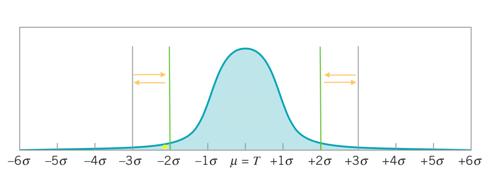
7.3 Tekil Ölçümler için I ve MR (Individual-Moving Range) Kontrol Diyagramları
I ve MR (hareket aralığı) diyagramları, ölçülebilir değişkenler için verinin tekil gözlemler halinde toplandığı durumlarda kullanılmaktadır. Bu durumların bazı örnekleri aşağıdaki gibidir:
- Veriler nispeten yavaş bir şekilde elde edilir ve analizden önce \(n>1\) örnek boyutlarının birikmesine izin vermek zahmetlidir. Gözlemler arasındaki uzun aralık, alt gruplamayla ilgili sorunlara neden olacaktır. Bu, hem imalat hem de imalat dışı durumlarda sıklıkla meydana gelir.
Tekil ölçümler için kontrol diyagramlarının birçok uygulamasında, işlem değişkenliğini tahmin etmenin temeli olarak iki ardışık gözlem hareket aralığını kullanırız. Hareket aralığı şu şekilde tanımlanır:
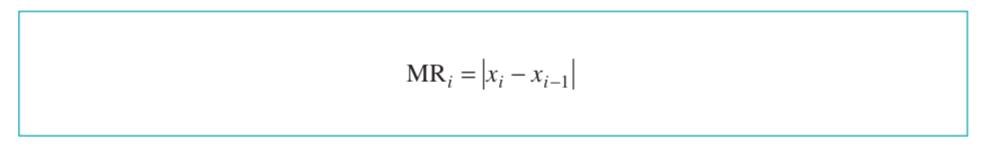
I kontrol diyagramında, LCL, CL ve UCL aşağıdaki formüller kullanılarak hesaplanabilir.
\(UCL_{I}=\bar{I}+3(\overline{MR}/d_{2})\)
\(CL_{I}=\bar{I}\)
\(LCL_{I}=\bar{I}-3(\overline{MR}/d_{2})\)
Bu eşitliklerde yer alan \(d_{2}\) değeri, kontrol limitleri faktör tablosu kullanılarak elde edilecektir. Tabloda n gözlem sayısını temsil etmektedir.
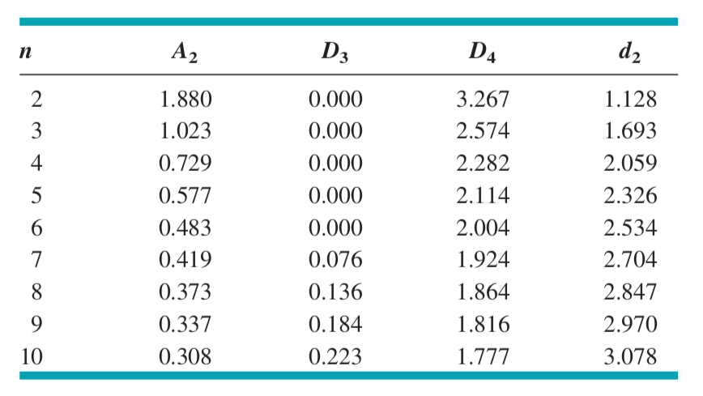
MR kontrol diyagramında ise, LCL, CL ve UCL aşağıdaki formüller yardımı ile hesaplanabilir.
\(UCL_{MR}=D_{4}\overline{MR}\)
\(CL_{MR}=\overline{MR}\)
\(LCL_{MR}=D_{3}\overline{MR}\)
Bu eşitliklerde \(D_{3}\) ve \(D_{4}\) değerleri kontrol limitleri faktör tablosu kullanılarak elde edilecektir.
Örnek 1: Ambalaj endüstrisinde, oluklu mukavva üretiminde sıvı nişasta kullanılmaktadır. Nişastanın sıcaklığı sürekli olarak kontrol edilmiş 15 dk. aralıklarla değer kaydedilmiştir.
I ve MR kontrol diyagramlarının kontrol limitlerinin hesaplanabilmesi için ilk olarak gözlemlere ait hareket aralığı \((MR)\) değerlerinin ve bu değerlerin ortalamamasının \((\overline{MR})\) hesaplanması gerekmektedir. \(MR\) değerleri iki ardıl gözlemin farkının mutlak değeri alınarak hesaplanabilir.
## [1] NA 0.4 0.8 0.4 0.1 0.5 1.0 0.1 0.2 0.9 0.6 0.5 0.8 1.2 0.5 0.1 0.8 1.8 2.5
## [20] 1.8## [1] 0.7894737I kontrol diyagramında kontrol limitlerinin hesaplanması için gereken diğer bir değer, gözlem değerlerinin aritmetik ortalamasıdır. Bu değer, şu şekilde hesaplanabilir.
## [1] 27.245I diyagramının oluşturulabilmesi için gerekli son değer; \(d_{2}\) faktör değeridir. Bu değer \(n=2\) için faktör tablosundan \(d_{2}=1.128\) olarak bulunur.
Bu değerler LCL, CL ve UCL eşitliklerinde yerlerine konularak kontrol limitleri hesaplanabilir.
## [1] 29.34466## [1] 27.245## [1] 25.14534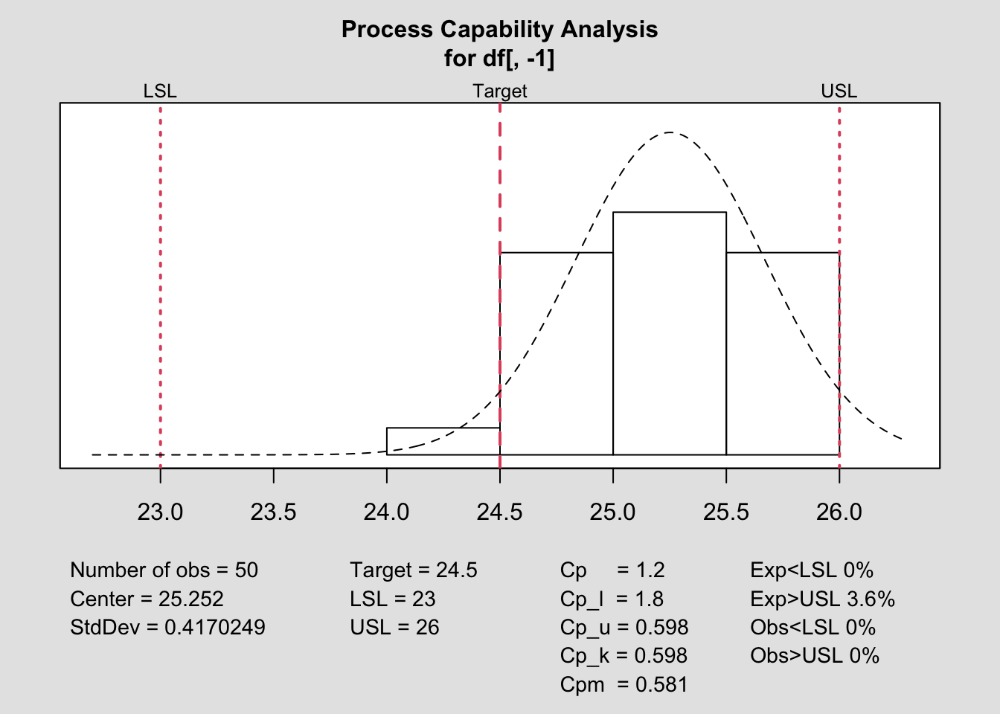
## [1] 2.579211## [1] 0.7894737## [1] 0
Kalite karakteristiğinin normallik varsayımı diyagramın hassasiyeti noktasında önem taşımaktadır. Analiz edilen veri setinin dağılımı incelenmeli ve normallik sağlanmıyorsa ilgili dönüşüm yapılarak inceleme sürecine devam edilmelidir. Özellikle I ve MR diyagramları normallikten sapmalara oldukça duyarlıdır.
Örnek 2: Bir bankanın ipotek kredisi işleme birimi, kredi başvurularının işleme alınma maliyetlerini izler. İzlenen miktar, toplam haftalık maliyetlerin hafta boyunca işlenen kredi sayısına bölünmesiyle elde edilen ortalama haftalık işlem maliyetleridir. Son 20 haftanın işlem maliyetleri Tablo 6.6’da gösterilmektedir. Bu veriler için I (bireysel) ve MR (hareketli aralık) kontrol diyagramlarını çiziniz.

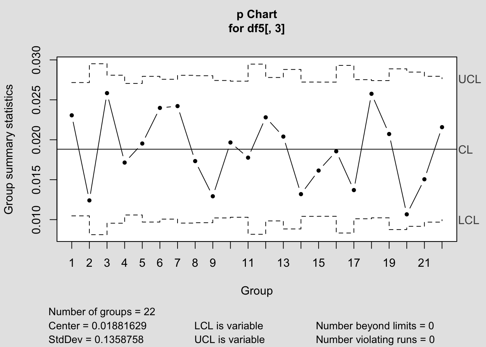
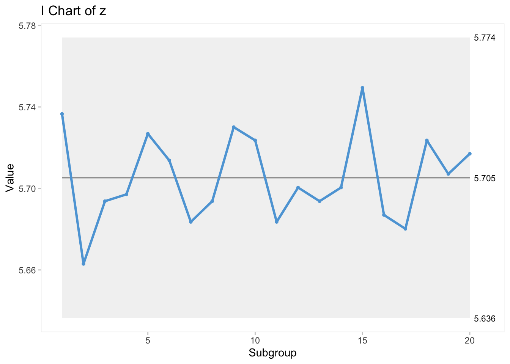